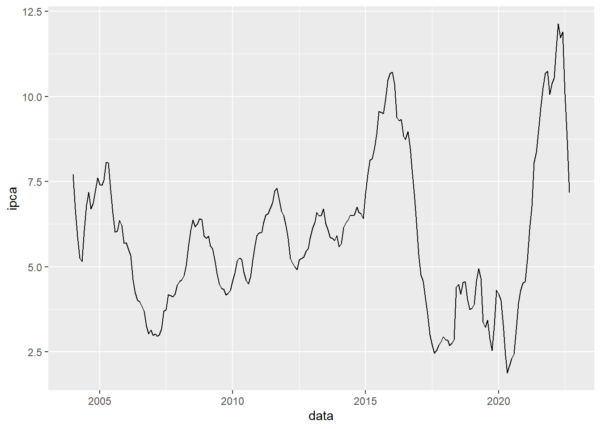
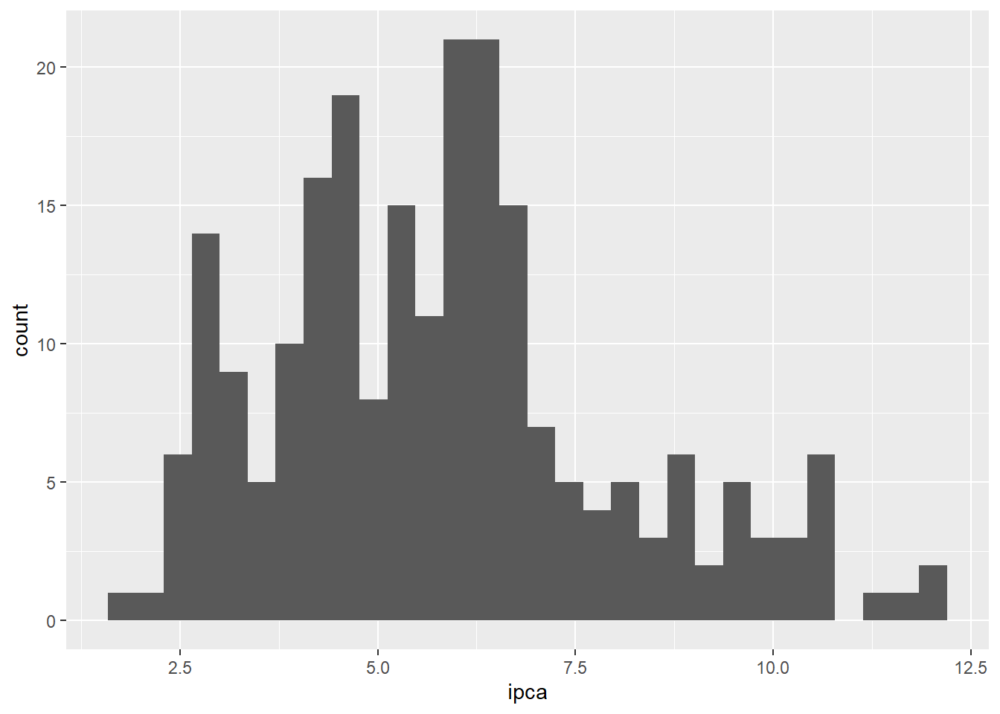

#### Importação
# Índice Nacional de Preços ao Consumidor Amplo (IPCA) - Acumulado 12 meses - IBGE
ipca_raw <- sidrar::get_sidra(api = "/t/1737/n1/all/v/2265/p/all/d/v2265%202")All others arguments are desconsidered when 'api' is informedLuiz Henrique
October 25, 2022
Para buscar os dados do SIDRA, devemos acessar a plataforma, encontrar a tabela dos dados do IPCA que desejamos, selecionar os parâmetros (as informações que desejamos importar) e em seguida copiar a chave API.
Com a chave API em mãos, podemos utilizar a função do pacote {sidrar}, get_sidra(), e salvar o resultado da consulta em um objeto.
Agora já temos uma forma de importar os dados do IPCA direto no R! Entretanto, vamos analisar o que importamos:
Rows: 514
Columns: 11
$ `Nível Territorial (Código)` <chr> "1", "1", "1", "1", "1", "1", "1", "1", "…
$ `Nível Territorial` <chr> "Brasil", "Brasil", "Brasil", "Brasil", "…
$ `Unidade de Medida (Código)` <chr> "", "", "", "", "", "", "", "", "", "", "…
$ `Unidade de Medida` <chr> "", "", "", "", "", "", "", "", "", "", "…
$ Valor <dbl> NA, NA, NA, NA, NA, NA, NA, NA, NA, NA, N…
$ `Brasil (Código)` <chr> "1", "1", "1", "1", "1", "1", "1", "1", "…
$ Brasil <chr> "Brasil", "Brasil", "Brasil", "Brasil", "…
$ `Variável (Código)` <chr> "2265", "2265", "2265", "2265", "2265", "…
$ Variável <chr> "IPCA - Variação acumulada em 12 meses", …
$ `Mês (Código)` <chr> "197912", "198001", "198002", "198003", "…
$ Mês <chr> "dezembro 1979", "janeiro 1980", "feverei…Há diversas colunas, com dados que não possuem importância para a nossa análise, bem como possuem colunas em que os tipos de dados estão totalmente errados! Devemos criar uma forma do R conseguir ler corretamente. Partimos para o processo de limpeza e tratamento.
Veja o código acima, parece um pouco complicado, certo? Vamos explicar um pouco o que está acontecendo.
Em primeiro lugar, colocamos o nome do objeto ipca_raw, em seguida um símbolo |> e depois uma função. O que aconteceu aqui? Estamos utilizando o operador pipe do R, que permite colocarmos tudo o que está do lado esquerdo (isto é, o resultado) dentro do primeiro argumento da função da próxima linha.
O primeiro argumento da função select() é um argumento que especifica qual o objeto com dados deverá ser utilizado, no caso, ipca_raw. O operador ajuda a criarmos uma sequência de códigos limpa e fácil de ler.
Seguindo o processo, iremos utilizar a função select()do pacote dplyr, que vai permitir escolhermos quais as colunas que queremos selecionar do data frame importado. No caso, selecionamos 2 colunas: Mês (Código) e Valor, veja que selecionamos utilizando aspas e também colocando “data” e “ipca” como valores iguais as colunas. Utilizamos isso para encurtar o caminho: estamos alterando o nome das colunas selecionadas para data e ipca, ou seja, além de selecionar colunas a função select permite alterar o nome das mesmas.
Em seguida, utilizamos pipe novamente, colocando o resultado da linha dentro da função da próxima linha: mutate(). A função mutate() permite alterar as observações das colunas do data frame. Aqui, utilizaremos a função ym do pacote lubridate para alterar os dados da coluna data para o tipo date (está em formato character).
Logo após, vamos aplicar um filtro de dados no data frame com a função filter(). Queremos dados a partir de 2004-01-01, que está salvo no objeto data_inicio. Para isso, dentro da função filter() colocamos que queremos os valores da coluna data >= (maior e igual) que data_inicio (2004-01-01).
Por fim, utilizamos a função as_tibble para alterar a estrutura de dados (a classe) do objeto para tibble, que é uma classe similar ao data frame usual, entretanto com mais informações.
Vamos começar com a função summary(), que permite calcular os cinco números dos valores do IPCA. Vemos que o valor mínimo do IPCA Acumulado em 12 meses foi de 1.88%, enquanto o valor máximo foi de 12.13%. A mediana dos valores durante o período está em 5.69%.
data ipca
Min. :2004-01-01 Min. : 1.880
1st Qu.:2008-09-01 1st Qu.: 4.310
Median :2013-05-01 Median : 5.690
Mean :2013-05-01 Mean : 5.838
3rd Qu.:2018-01-01 3rd Qu.: 6.760
Max. :2022-09-01 Max. :12.130 Podemos entender o comportamento do indicador ao longo do tempo através de uma gráfico de linha, com a data no eixo x e o IPCA no eixo y. Para construir, utilizamos o pacote {ggplot2}, com as suas funções. Primeiro criamos a camada do gráfico com ggplot(), em seguida, criamos a camada das coordenadas dos dados do gráfico com aes(), depois construído o gráfico de linha com geom_line(), e por fim, adicionamos geom_smooth() para criar uma linha que mensura a tendência do indicador ao longo da série.
# Gráfico de linha
ipca |>
ggplot2::ggplot() +
ggplot2::aes(x = data, y = ipca) +
ggplot2::geom_line()
Com o Histograma podemos analisar a distribuição dos dados. Vemos que os valores se encontram próximo do valor 5% e 6%, com uma cauda alongada para a direita, com pontos extremos positivos, significando menores frequências de acontecimento
# Gráfico de histograma do IPCA
ipca |>
ggplot2::ggplot() +
ggplot2::aes(x = ipca) +
ggplot2::geom_histogram()`stat_bin()` using `bins = 30`. Pick better value with `binwidth`.
Hoje descobrimos o quão fácil é analisar a Taxa de Inflação do Brasil. Para aprofundamentos, é possível analisar outras janelas de variações (mensal, semestral, anual), além de dar um passo adiante e iniciar a etapa de modelagem. Até a próxima!